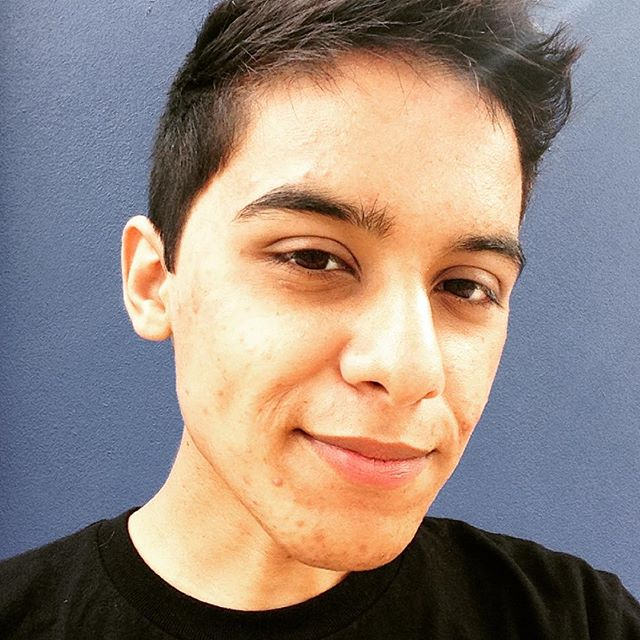
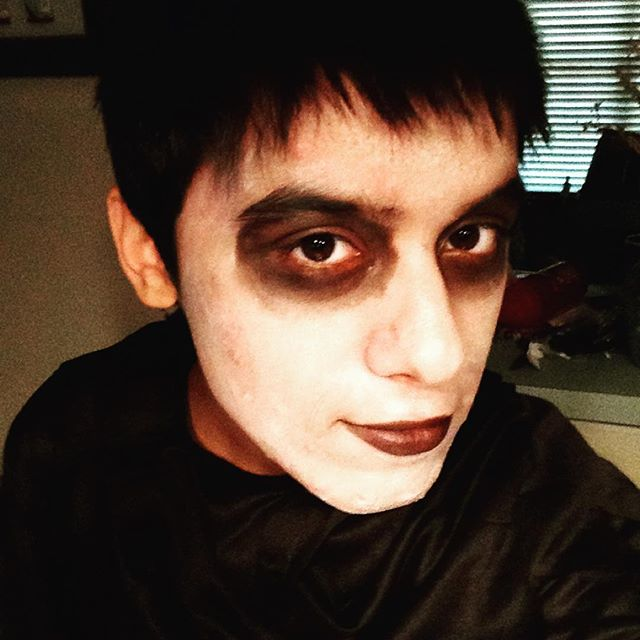

Introduction
I was born on March 28, 1996 in New Britain, Connecticut. After a year, my family moved down to Kissimmee, Florida and that's where I've lived ever since. I'm Pakistani and I have visited the country twice. The hot and dry climate along with the general dirtiness of the streets made living there unbearable. I currently live in Kissimmee and I'm going to stay here forever, probably. I live 15 minutes away from Valencia's Osceola Campus which is amazing, but I'm going to have to attend East Campus because the classes I need for my degree are all there.
Personality-wise, I'm a pretty quiet and reserved person. I really don't talk to people outside of my circle of friends. Around my friends, my personality becomes the opposite. I really love hanging out with and talking to my friends; my group is the greatest.
 Some hobbies of mine are playing video games, browsing the Internet, and watching random shows on Netflix. My favorite TV show is Parks and Recreation, however I depend on Netflix having the series available for streaming because buying the DVD set is crazy expensive. The only video games I play are Kingdom Hearts and Final Fantasy. I think when they stop making sequels to those games I'll probably stop gaming altogether.
Interesting Facts
- I'm fluent in both English and Urdu (the national language of Pakistan).
- My favorite color is blue which explains this site's color scheme.
- I love cats so much! My cat, Minni, is absolutely adorable. She's only a year old.
- I have a small interest in cars. My favorite is anything Nissan, especially the Skyline.
- My absolute favorite food is a calzone. So delicious, it truly is a culinary marvel.